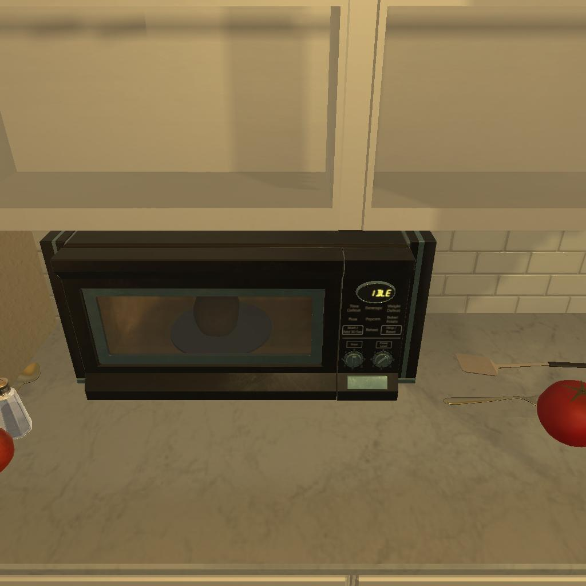

---------------------------------------------------------task: 10---------------------------------------------------------
--------------------------------------------------------------------------------------------------------------------------------------------------------------------
--------------------------------------------------------------------------------------------------------------------------------------------------------------------
Step:--------------------------------------------------------------------------10-------------------------------------------------------------------------------
----------------------------------------
VLM Prompt:
**Task**
Please perform as an embodied AI agent. Our final objective is to put a clean plate in countertop. Below is the plan for completing the task, the current observation, alongside historical data and admissible actions for the next step. Please determine the best action for the next step!
**Plan**
Below is a detailed step-by-step plan to complete the task.
1. Find a plate.
2. Pick up the plate.
3. Find a sink or basin.
4. Clean the plate with the sink or basin.
5. Find a countertop.
6. Place the cleaned plate on the countertop.
**Current Observation**
Displayed is an image capturing the current position of the agent.
Objects in The Image: ['microwave', 'cabinet', 'salt shaker', 'tomato', 'spatula']
**History Information**
Displayed are the previous observations with their corresponding actions.
State 0:
No history.
State 1:
1. Step Index in the Plan: 1
2. Objects: Kitchen Sink, Faucet, Countertop
3. Action: go to cabinet 1
State 2:
1. Step Index in the Plan: Unknown
2. Objects: Cabinet, Subway Tile Backsplash, Under Cabinet Lighting
3. Action: open cabinet 1
State 3:
1. Step Index in the Plan: 1
2. Objects: Wall, Subway Tiles, Shadow
3. Action: go to cabinet 3
State 4:
1. Step Index in the Plan: 1
2. Objects: Wall, Stairs, Tile Backsplash
3. Action: open cabinet 3
State 5:
2. Step Index in the Plan: 1
3. Objects: Wall, Subway Tiles, Countertop, Cabinets
4. Action: go to cabinet 4
State 6:
1. Step Index in the Plan: 1
2. Objects: Microwave, Cabinet, Salt Shaker, Tomato, Fork
3. Action: open cabinet 4
State 7:
1. Step Index in the Plan: 1
2. Objects: Microwave, Salt Shaker, Tomato, Broken Eggshell, Egg Yolk
3. Action: go to cabinet 5
State 8:
1. Step Index in the Plan: 1
2. Objects: Countertop, Microwave, Salt and Pepper Shakers, Kitchen Cabinets
3. Action: go to cabinet 6
State 9:
1. Step Index in the Plan: 1
2. Objects: Countertop, Microwave, Tomatoes
3. Action: go to cabinet 7
State 10:
1. Step Index in the Plan: Unknown (task is to find a plate)
2. Objects: Microwave, Cabinet (possibly cabinet 7), Salt Shaker, Tomato, Knife
3. Action: open cabinet 7
**Admissible Actions**
(1): go to cabinet 1
(2): go to cabinet 2
(3): go to cabinet 3
(4): go to toaster 1
(5): go to cabinet 4
(6): go to cabinet 5
(7): go to microwave 1
(8): go to garbagecan 1
(9): go to countertop 1
(10): go to drawer 1
(11): go to drawer 2
(12): go to stoveburner 1
(13): go to stoveburner 2
(14): go to countertop 2
(15): go to cabinet 8
(16): go to cabinet 9
(17): go to cabinet 10
(18): go to drawer 3
(19): go to drawer 4
(20): go to stoveburner 3
(21): go to stoveburner 4
(22): go to cabinet 11
(23): go to cabinet 12
(24): go to cabinet 13
(25): go to cabinet 14
(26): go to sinkbasin 1
(27): go to sink 1
(28): go to cabinet 15
(29): go to fridge 1
(30): go to cabinet 16
(31): go to cabinet 17
(32): go to cabinet 18
(33): go to cabinet 19
(34): go to diningtable 1
(35): go to coffeemachine 1
(36): go to cabinet 20
(37): close cabinet 7
(38): take tomato 1 from cabinet 7
(39): take peppershaker 1 from cabinet 7
(40): take spatul1 from cabinet 7
(41): take fork 1 from cabinet 7
(42): take apple 1 from cabinet 7
(43): take spoon 1 from cabinet 7
**Analysis Guideline**
1. Analyze the history and current observation, and then determine our current step in the plan and our current place.
2. List all visible objects related to the task in the current observation, without summarizing any as "various items."
3. Analyze the objects in the current observation based on the history and the requirements for the current step, and then determine if we can complete the step with the current observation.
4. Analyze and decide on the most appropriate action to take.
5. Summarize the analysis using the following format: "Analysis: [The summarization of the analysis], The Most Appropriate Action: (i which is the integer.): [Selected action]"
**Notes**
1. We must complete each step of the plan in order and cannot skip steps when the previous ones are not finished.
2. For "Go to" actions listed as "go to xxx [n]", interpret this as there are n distinct actions available: "go to xxx 1", "go to xxx 2", ..., "go to xxx n". Select one specific action from these options instead of using "go to xxx [n]".
3. If receptacles such as drawers, cabinets, and so forth are closed in the current observation, we may try to open them.
4. Pay attention to synonyms and ensure clarity in the terms used.
5. We must determine and provide the single action which must be in the **Admissible Actions**.
6. If there is no history available, we are at the first step and the current place is "Unknown".
**Answer**
Please select the most suitable action by following the **Analysis Guideline**, keeping the above **Notes** in mind.
----------------------------------------
----------------------------------------
VLM Response:
Analysis: The current step in the plan is to find a plate, which is step 1. Based on the current observation, the agent seems to be facing a microwave on a countertop. The visible objects in the current observation related to the task are the microwave and the cabinet above it. The cabinet above the microwave is likely to contain plates or other kitchenware. Since the historical data indicates that cabinets 1 through 7 have been interacted with and the plan to find a plate has not been marked as completed, we can assume that a plate has not been found in those cabinets. Therefore, the goal remains to locate a plate, which may involve searching further in the remaining cabinets. Cabinet 7 was most recently interacted with, but there is no plate there according to the admissible actions. The next logical step is to continue searching the cabinets that have not yet been checked.
The Most Appropriate Action: (15): go to cabinet 8
----------------------------------------
----------------------------------------
>>> Refine VLM Response and Get Pure Action: go to cabinet 8
----------------------------------------
-----------------------------------------------------------------
Running time: 12.19078516960144 seconds
Total Money: 0
-----------------------------------------------------------------
-----------------------------------------------------------------
Summarization Prompt:
**Context**
Analysis: Since there is no history information, we are at the first step in the plan, which is to find a statue. The current place is unknown. In the current observation, we see a floorlamp next to an armchair with a small table that has a small object on it, which could potentially be the statue we are looking for. Since the plan requires us to find a statue first and it appears there might be one on the table next to the armchair, we should investigate this object to determine if it is the statue we need.
The Most Appropriate Action: (1): go to armchair 1
**Summary**
1. Step Index in the Plan: 1
2. Objects: Floorlamp, Armchair, Small Table, Small Object (potential statue)
3. Action: go to armchair 1
**Context**
Analysis: The current step in the plan is to find a plate, which is step 1. Based on the current observation, the agent seems to be facing a microwave on a countertop. The visible objects in the current observation related to the task are the microwave and the cabinet above it. The cabinet above the microwave is likely to contain plates or other kitchenware. Since the historical data indicates that cabinets 1 through 7 have been interacted with and the plan to find a plate has not been marked as completed, we can assume that a plate has not been found in those cabinets. Therefore, the goal remains to locate a plate, which may involve searching further in the remaining cabinets. Cabinet 7 was most recently interacted with, but there is no plate there according to the admissible actions. The next logical step is to continue searching the cabinets that have not yet been checked.
The Most Appropriate Action: (15): go to cabinet 8
Please summarize the context by following above examples when providing the summary, and ensure that only the summary is included, without any extra explanation.
**Summary**
-----------------------------------------------------------------
-----------------------------------------------------------------
Summarization Response:
1. Step Index in the Plan: 1
2. Objects: Microwave, Cabinet
3. Action: go to cabinet 8
-----------------------------------------------------------------
-----------------------------------------------------------------
Text Observation:You arrive at loc 16. The cabinet 8 is closed.
-----------------------------------------------------------------
UNSUCCEED